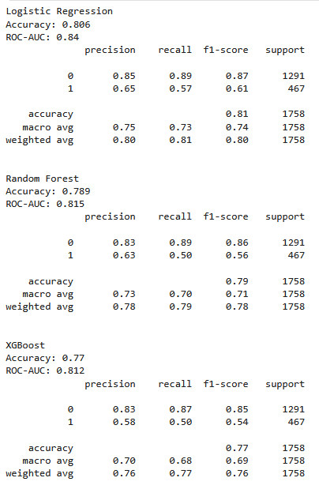

Customer Churn Detector
A personal exploration project using cutomer churn data from kaggle.
View on GitHubProject Goal
The main goal is to build and evaluate a machine learning model that can accurately identify customers at high risk of churning. With early identification, the company can take targeted retention actions.
The Brief & Challenge
The cost of retaining existing customers is far lower than acquiring new ones. The challenge was to analyze historical customer data to find hidden patterns indicating an intent to churn, allowing for intervention before the customer actually leaves.
Process & Outcome
The process started with data cleaning, Exploratory Data Analysis (EDA) for insights, and feature engineering. Several classification models, such as Logistic Regression, Random Forest, and XGB, were built and their performance was compared.
Early churn detection helps proactively target at-risk customers with special offers or services to improve retention.
Model Performance Evaluation
Trained 3 different baseline model.
 View Full Project on GitHub